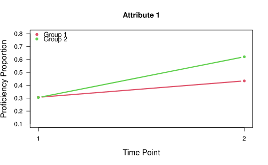
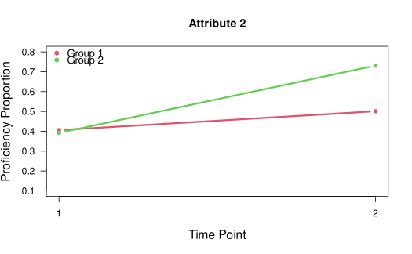
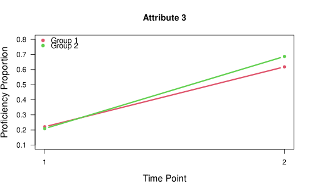
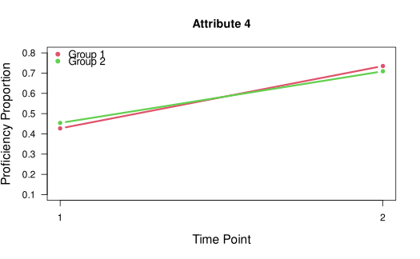
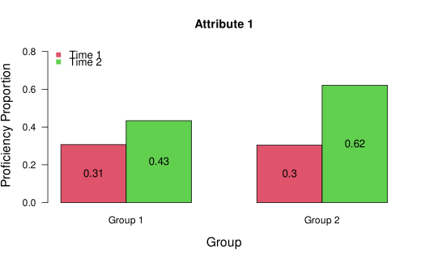
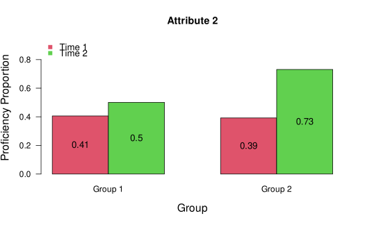
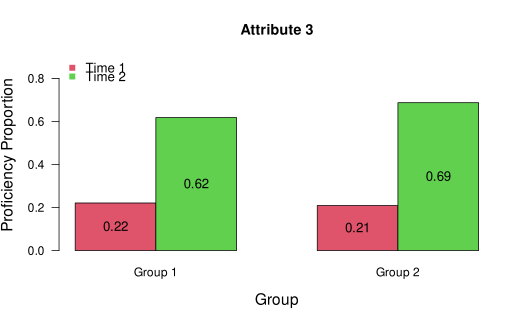
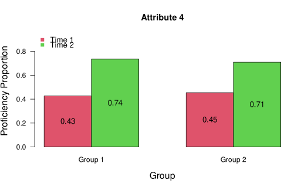

Estimating the multigroup transition diagnostic classification model (TDCM)
Source:R/mg.tdcm.R
mg.tdcm.RdThis function estimates the multigroup TDCM (Madison & Bradshaw, 2018).
Usage
mg.tdcm(
data,
qmatrix,
time.points,
dcmrule = "GDINA",
groups,
group.invariance = TRUE,
item.invariance = TRUE,
progress = TRUE
)Arguments
- data
a required \(N \times T \times I\) matrix. For each time point, binary item responses are in the columns.
- qmatrix
a required \(I \times A\) matrix indicating which items measure which attributes.
- time.points
the number of time points (i.e., measurement/testing occasions), integer \(\ge 2\).
- dcmrule
the specific DCM to be employed. Currently accepts “GDINA”, “ACDM”, “DINA”, “GDINA1”, “GDINA2”, and so on. Default is “GDINA”, which is implemented with a logit link to estimate the LCDM. The “ACDM” rule will estimate the LCDM with only main effects. The “DINA” rule will estimate the DINA model. “GDINA1” will estimate the LCDM with only main effects, equivalent to “ACDM”. “GDINA2” will estimate the LCDM with up to two-way interaction effects. If dcmrule is entered as a single string, that DCM will be assumed for each item. If entered as a vector, a DCM can be specified for each item.
- groups
A required vector of group identifiers for multiple group estimation.
- group.invariance
logical indicator for whether item parameter invariance should be assumed equal for all groups. Default = T. If specified as false, item parameters are not assumed equal for groups.
- item.invariance
logical indicator for whether item parameter invariance should be constrained to be equal at each time point. Default = T. If specified as false, item parameters are not assumed equal over time.
- progress
An optional logical indicating whether the function should print the progress of estimation.
Value
An object of class gdina with entries as indicated in the CDM package. For the TDCM-specific results (e.g., growth, transitions), results are summarized using the mg.tdcm.summary function.
References
Madison, M. J., & Bradshaw, L. (2018). Evaluating intervention effects in a diagnostic classification model framework. Journal of Educational Measurement, 55(1), 32-51.
Examples
## Example 4: G = 2, T = 2, A = 4
data(data.tdcm04, package = "TDCM")
dat4 <- data.tdcm04$data
qmat4 <- data.tdcm04$qmatrix
group4 <- data.tdcm04$groups
# estimate mgTDCM with invariance assumed and full LCDM
mg1 <- TDCM::mg.tdcm(dat4, qmat4,
time.points = 2, dcmrule = "GDINA",
group = group4, group.invariance = TRUE, item.invariance = TRUE)
#> [1] Preparing data...
#> [1] Estimating mgTDCM...
#> [1] Note: Depending on model specifications, estimation for the multigroup TDCM can take a few minutes.
#> [1] Estimating mgTDCM, progress = 48%...
#> [1] Routine finished. Use the mg.tdcm.summary function to display results.
# summarize results
results1 <- TDCM::mg.tdcm.summary(mg1, time.points = 2)
#> [1] Summarizing results...
#> [1] Summarizing results, progress = 43%...
#> [1] Routine finished. Check results.
# plot results
TDCM::tdcm.plot(results1)








#> [1] **Check plots window for line and bar plots for growth proportions.
# estimate mgTDCM without group invariance
mg2 <- TDCM::mg.tdcm(dat4, qmat4,
time.points = 2, dcmrule = "GDINA",
group = group4, group.invariance = FALSE, item.invariance = TRUE)
#> [1] Preparing data...
#> [1] Estimating mgTDCM...
#> [1] Note: Depending on model specifications, estimation for the multigroup TDCM can take a few minutes.
#> [1] Estimating mgTDCM, progress = 41%...
#> [1] Routine finished. Use the mg.tdcm.summary function to display results.
# compare models to assess group invariance
TDCM::tdcm.compare(mg1, mg2)
#> Model loglike Deviance Npars AIC BIC Chisq df p
#> 1 mg1 -37371.96 74743.92 130 75003.92 75710.91 27.92 56 0.9994
#> 2 mg2 -37358 74716 186 75088 76099.54 NA NA NA